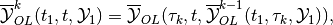
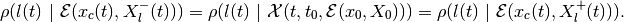
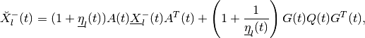

Reachability¶
Basics of Reachability Analysis¶
Systems without disturbances¶
Consider a general continuous-time
(1)
or discrete-time dynamical system
(2)
wherein  is time [1],
is time [1],  is the state,
is the control, and
is the state,
is the control, and  is a measurable
vector function taking values in . [2] The control
values are restricted to a closed compact control set
. An open-loop control does not
depend on the state, ; for a closed-loop control,
is a measurable
vector function taking values in . [2] The control
values are restricted to a closed compact control set
. An open-loop control does not
depend on the state, ; for a closed-loop control,
 .
.
The (forward) reach set  at time
at time
 from the initial position
from the initial position  is the set of
all states
is the set of
all states  reachable at time by system (1),
or (2), with
reachable at time by system (1),
or (2), with  through all possible controls
through all possible controls
 ,
,
 . For a given set of initial states
. For a given set of initial states
 , the reach set
, the reach set
 is
is

Here are two facts about forward reach sets.
- is the same for
open-loop and closed-loop control.
- satisfies the semigroup
property,
(3)

For linear systems
(4)
with matrices  in and
in and
 in . For continuous-time linear
system the state transition matrix is
in . For continuous-time linear
system the state transition matrix is
which for constant  simplifies as
simplifies as
For discrete-time linear system the state transition matrix is
which for constant simplifies as

If the state transition matrix is invertible,
 . The transition matrix is
always invertible for continuous-time and for sampled discrete-time
systems. However, if for some
. The transition matrix is
always invertible for continuous-time and for sampled discrete-time
systems. However, if for some  ,
,  ,
,
 is degenerate (singular),
, is also degenerate
and cannot be inverted.
is degenerate (singular),
, is also degenerate
and cannot be inverted.
Following Cauchy’s formula, the reach set
for a linear system can be
expressed as
(5)
in continuous-time, and as
(6)
in discrete-time case.
The operation ‘’ is the geometric sum, also known as
Minkowski sum. [3] The geometric sum and linear (or affine)
transformations preserve compactness and convexity. Hence, if the
initial set and the control sets
 , , are compact and
convex, so is the reach set
.
, , are compact and
convex, so is the reach set
.
The backward reach set for the target
position  is the set of all states for
which there exists some control
,
is the set of all states for
which there exists some control
,
 , that steers system (1), or (2) to
the state
, that steers system (1), or (2) to
the state  at time . For the target set
at time . For the target set
 at time , the backward reach set
is
at time , the backward reach set
is

The backward reach set
is the largest weakly
invariant set with respect to the target set and
time values and . [4]
Remark. Backward reach set can be computed for continuous-time
system only if the solution of (1) exists for  ; and
for discrete-time system only if the right hand side of (2) is
invertible [5].
; and
for discrete-time system only if the right hand side of (2) is
invertible [5].
These two facts about the backward reach set  are
similar to those for forward reach sets.
are
similar to those for forward reach sets.
is the same for open-loop and closed-loop control.
satisfies the semigroup property,
(7)

For the linear system (4) the backward reach set can be expressed as
(8)
in the continuous-time case, and as
(9)
in discrete-time case. The last formula makes sense only for discrete-time linear systems with invertible state transition matrix. Degenerate discrete-time linear systems have unbounded backward reach sets and such sets cannot be computed with available software tools.
Just as in the case of forward reach set, the backward reach set of a
linear system is compact
and convex if the target set and the control sets
, , are compact and
convex.
Remark. In the computer science literature the reach set is said to be the result of operator post, and the backward reach set is the result of operator pre. In the control literature the backward reach set is also called the solvability set.
Systems with disturbances¶
Consider the continuous-time dynamical system with disturbance
(10)
or the discrete-time dynamical system with disturbance
(11)
in which we also have the disturbance input  with
values
with
values  restricted to a closed compact set
restricted to a closed compact set
 .
.
In the presence of disturbances the open-loop reach set (OLRS) is different from the closed-loop reach set (CLRS).
Given the initial time  , the set of initial states
, and terminal time , there are two types
of OLRS.
, the set of initial states
, and terminal time , there are two types
of OLRS.
The maxmin open-loop reach set
is the set
of all states  , such that for any disturbance
, there exist an initial state
and a control
, such that for any disturbance
, there exist an initial state
and a control
 , , that
steers system (10) or (11) from to
.
, , that
steers system (10) or (11) from to
.
The minmax open-loop reach set
is the set
of all states , such that there exists a control
that for all disturbances
, ,
assigns an initial state and steers system
(10), or (11), from to .
In the maxmin case the control is chosen
after knowing the disturbance over the entire time interval
![[t_0, t]](_images/math/9cfd7cc884ddf9e7b9d34795c8cd6ab315ad64b2.png) , whereas in the minmax case the control is chosen
before any knowledge of the disturbance. Consequently, the OLRS do not
satisfy the semigroup property.
, whereas in the minmax case the control is chosen
before any knowledge of the disturbance. Consequently, the OLRS do not
satisfy the semigroup property.
The terms ‘maxmin’ and ‘minmax’ come from the fact that is the subzero level set of the value function
(12)
i.e.,
 ,
and is the
subzero level set of the value function
,
and is the
subzero level set of the value function
(13)
in which  denotes Hausdorff
semidistance. [6] Since
denotes Hausdorff
semidistance. [6] Since
 ,
,
 .
.
Note that maxmin and minmax OLRS imply guarantees: these are states that can be reached no matter what the disturbance is, whether it is known in advance (maxmin case) or not (minmax case). The OLRS may be empty.
Fixing time instant  ,
,  , define the
piecewise maxmin open-loop reach set with one correction,
, define the
piecewise maxmin open-loop reach set with one correction,
(14)
and the piecewise minmax open-loop reach set with one correction,
(15)
The piecewise maxmin OLRS is the subzero level set of the value function
(16)
with  given by (12), which yields
given by (12), which yields

and thus,
On the other hand, the piecewise minmax OLRS
 is the
subzero level set of the value function
is the
subzero level set of the value function
(17)
with given by (13), which yields
and thus,

We can now recursively define piecewise maxmin and minmax OLRS with
 corrections for
corrections for  . The maxmin
piecewise OLRS with corrections is
. The maxmin
piecewise OLRS with corrections is
(18)
which is the subzero level set of the corresponding value function
(19)
The minmax piecewise OLRS with corrections is
(20)
which is the subzero level set of the corresponding value function
(21)
From (16), (17), (19) and (21) it follows that

Hence,
(22)
We call
(23)
the maxmin closed-loop reach set of system (10) or (11) at
time , and we call
(24)
the minmax closed-loop reach set of system (10) or (11) at
time .
Given initial time and the set of initial
states , the maxmin CLRS
 of system
(10) or (11) at time , is the set of all states
, for each of which and for every disturbance
, there exist an initial state
and a control
, such that the trajectory
satisfying
of system
(10) or (11) at time , is the set of all states
, for each of which and for every disturbance
, there exist an initial state
and a control
, such that the trajectory
satisfying
 and
and

in the continuous-time case, or

in the discrete-time case, with , is such
that .
Given initial time and the set of initial states , the
maxmin CLRS of system
(10) or (11), at time , is the set of all states
, for each of which there exists a control
, and for every disturbance
there exists an initial state
, such that the trajectory
satisfying
and

in the continuous-time case, or

in the discrete-time case, with , is such
that .
By construction, both
maxmin and minmax CLRS satisfy the semigroup property (3).
For some classes of dynamical systems and some types of constraints on
initial conditions, controls and disturbances, the maxmin and minmax
CLRS may coincide. This is the case for continuous-time linear systems
with convex compact bounds on the initial set, controls and disturbances
under the condition that the initial set is large
enough to ensure that
is nonempty for
some small  .
.
Consider the linear system case,
(25)
where and are as in (4), and
 takes its values in .
takes its values in .
The maxmin OLRS for the continuous-time linear system can be expressed through set valued integrals,
(26)
and for discrete-time linear system through set-valued sums,
(27)
Similarly, the minmax OLRS for the continuous-time linear system is
(28)
and for the discrete-time linear system it is
(29)
The operation ‘’ is geometric difference, also known as Minkowski difference. [7]
Now consider the piecewise OLRS with corrections. Expression
(18) translates into
in the continuous-time case, and for the discrete-time case into
(30)
Expression (20) translates into
(31)
in the continuous-time case, and for the discrete-time case into
(32)
Since for any it is true that

from (?), (31) and from (30),
(32), it is clear that (22) is true.
For linear systems, if the initial set , control
bounds and disturbance bounds
 , , are compact and
convex, the CLRS
and
are
compact and convex, provided they are nonempty. For continuous-time
linear systems,
.
, , are compact and
convex, the CLRS
and
are
compact and convex, provided they are nonempty. For continuous-time
linear systems,
.
Just as for forward reach sets, the backward reach sets can be open-loop (OLBRS) or closed-loop (CLBRS).
Given the terminal time and target set
, the maxmin open-loop backward reach set
of system
(10) or (11) at time , is the set of all  ,
such that for any disturbance there
exists a terminal state
,
such that for any disturbance there
exists a terminal state  and control
, , which
steers the system from
and control
, , which
steers the system from  to
to  .
.
is the subzero level set of the value function
(33)
Given the terminal time and target set
, the minmax open-loop backward reach set
 of system
(10) or (11) at time , is the set of all ,
such that there exists a control
that for all disturbances ,
, assigns a terminal state
and steers the system from
to .
is the
subzero level set of the value function
of system
(10) or (11) at time , is the set of all ,
such that there exists a control
that for all disturbances ,
, assigns a terminal state
and steers the system from
to .
is the
subzero level set of the value function
(34)
Remark. The backward reach set can be computed for a continuous-time
system only if the solution of (10) exists for , and
for a discrete-time system only if the right hand side of (11) is
invertible.
Similarly to the forward reachability case, we construct piecewise OLBRS
with one correction at time ,  . The
piecewise maxmin OLBRS with one correction is
. The
piecewise maxmin OLBRS with one correction is
(35)
and it is the subzero level set of the function
(36)
The piecewise minmax OLBRS with one correction is
(37)
and it is the subzero level set of the function
(38)
Recursively define maxmin and minmax OLBRS with corrections
for . The maxmin OLBRS with
corrections is
(39)
which is the subzero level set of function
(40)
The minmax OLBRS with corrections is
(41)
which is the subzero level set of the function
(42)
From (36), (38), (40) and (42) it follows that
Hence,
(43)
We say that
(44)
is the maxmin closed-loop backward reach set of system (10) or
(11) at time .
We say that
(45)
is the minmax closed-loop backward reach set of system (10) or
(11) at time .
Given the terminal time and
target set , the maxmin CLBRS
of system
(10) or (11) at time , is the set of all states
, for each of which for every disturbance
there exists terminal state
and control
that assigns trajectory
satisfying

in continuous-time case, or

in discrete-time case, with , such that
and .
Given the terminal time and target set , the
minmax CLBRS  of system
([ctds2]) or [dtds2] at time , is the set of all states
, for each of which there exists control
that for every disturbance
assigns terminal state
and trajectory
satisfying
of system
([ctds2]) or [dtds2] at time , is the set of all states
, for each of which there exists control
that for every disturbance
assigns terminal state
and trajectory
satisfying
in the continuous-time case, or
in the discrete-time case, with , such that
and .
Both maxmin and minmax CLBRS satisfy the semigroup property (7).
The maxmin OLBRS for the continuous-time linear system can be expressed through set valued integrals,
(46)
and for the discrete-time linear system through set-valued sums,
(47)
Similarly, the minmax OLBRS for the continuous-time linear system is
(48)
and for the discrete-time linear system it is
(49)
Now consider piecewise OLBRS with corrections. Expression
(39) translates into
(50)
in the continuous-time case, and for the discrete-time case into
(51)
Expression (41) translates into
(52)
in the continuous-time case, and for the discrete-time case into
(53)
For continuous-time linear systems
 under the condition that the target set is large
enough to ensure that
under the condition that the target set is large
enough to ensure that
 is nonempty for some small .
is nonempty for some small .
Computation of backward reach sets for discrete-time linear systems
makes sense only if the state transition matrix  is
invertible.
is
invertible.
If the target set , control sets
and disturbance sets
, , are compact and
convex, then CLBRS
and
are
compact and convex, if they are nonempty.
Reachability problem¶
Reachability analysis is concerned with the computation of the forward
and backward
reach sets (the reach sets
may be maxmin or minmax) in a way that can effectively meet requests
like the following:
For the given time interval
, determine whether the
system can be steered into the given target set
. In other words, is the set
 nonempty? And if the answer is ‘yes’, find a control that steers the
system to the target set (or avoids the target set). [8]
nonempty? And if the answer is ‘yes’, find a control that steers the
system to the target set (or avoids the target set). [8]If the target set
is reachable from the given
initial condition in the time
interval , find the shortest time to reach
,Given the terminal time , target set
and time find the set of states
starting at time from which the system can reach
within time interval . In
other words, find
.Find a closed-loop control that steers a system with disturbances to the given target set in given time.
Graphically display the projection of the reach set along any specified two- or three-dimensional subspace.
For linear systems, if the initial set , target
set , control bounds  and disturbance bounds
and disturbance bounds  are compact and
convex, so are the forward
and backward reach sets.
Hence reachability analysis requires the computationally effective
manipulation of convex sets, and performing the set-valued operations of
unions, intersections, geometric sums and differences.
are compact and
convex, so are the forward
and backward reach sets.
Hence reachability analysis requires the computationally effective
manipulation of convex sets, and performing the set-valued operations of
unions, intersections, geometric sums and differences.
Existing reach set computation tools can deal reliably only with linear systems with convex constraints. A claim that certain tool or method can be used effectively for nonlinear systems must be treated with caution, and the first question to ask is for what class of nonlinear systems and with what limit on the state space dimension does this tool work? Some “reachability methods for nonlinear systems” reduce to the local linearization of a system followed by the use of well-tested techniques for linear system reach set computation. Thus these approaches in fact use reachability methods for linear systems.
Ellipsoidal Method¶
Continuous-time systems¶
Consider the system
(54)
in which is the state, is
the control and is the disturbance. ,
and are continuous and take their values in
,  and
and
 respectively. Control
respectively. Control  and
disturbance are measurable functions restricted by
ellipsoidal constraints:
and . The set of initial states
at initial time is assumed to be the ellipsoid
and
disturbance are measurable functions restricted by
ellipsoidal constraints:
and . The set of initial states
at initial time is assumed to be the ellipsoid
 .
.
The reach sets for systems with disturbances computed by the Ellipsoidal Toolbox are CLRS. Henceforth, when describing backward reachability, reach sets refer to CLRS or CLBRS. Recall that for continuous-time linear systems maxmin and minmax CLRS coincide, and the same is true for maxmin and minmax CLBRS.
If the matrix  , the system (54) becomes an
ordinary affine system with known . If
, the system becomes linear. For these two cases
( or
, the system (54) becomes an
ordinary affine system with known . If
, the system becomes linear. For these two cases
( or  ) the reach set is as given in
Definition [def:sub:olrs], and so the reach set will be denoted as
) the reach set is as given in
Definition [def:sub:olrs], and so the reach set will be denoted as
 .
.
The reach set  is a
symmetric compact convex set, whose center evolves in time according to
is a
symmetric compact convex set, whose center evolves in time according to
(55)
Fix a vector , and consider the solution
 of the adjoint equation
of the adjoint equation
(56)
which is equivalent to
If the reach set  is
nonempty, there exist tight external and tight internal approximating
ellipsoids
is
nonempty, there exist tight external and tight internal approximating
ellipsoids  and
and
 , respectively, such that
, respectively, such that
(57)
and
(58)
The equation for the shape matrix of the external ellipsoid is
(59)
(60)
in which

and the orthogonal matrix ( )
is determined by the equation
)
is determined by the equation

In the presence of disturbance, if the reach set is empty, the matrix
 becomes sign indefinite. For a system without
disturbance, the terms containing and vanish
from the equation (59).
becomes sign indefinite. For a system without
disturbance, the terms containing and vanish
from the equation (59).
The equation for the shape matrix of the internal ellipsoid is
(61)
(62)
in which
and the orthogonal matrix  is determined by the equation
is determined by the equation
Similarly to the external case, the terms containing and
vanish from the equation ([fwdint1]) for a system without
disturbance.
The point where the external and internal ellipsoids touch the boundary of the reach set is given by
The boundary points form trajectories, which we call
extremal trajectories. Due to the nonsingular nature of the state
transition matrix  , every boundary point of the reach
set belongs to an extremal trajectory. To follow an extremal trajectory
specified by parameter , the system has to start at time
at initial state
, every boundary point of the reach
set belongs to an extremal trajectory. To follow an extremal trajectory
specified by parameter , the system has to start at time
at initial state
(63)
In the absence of disturbances, the open-loop control
(64)
steers the system along the extremal trajectory defined by the vector . When a disturbance is present, this control keeps the system on an extremal trajectory if and only if the disturbance plays against the control always taking its extreme values.
Expressions (57) and (58) lead to the following fact,
In practice this means that the more values of we use to
compute and , the better will be our
approximation.
Analogous results hold for the backward reach set.
Given the terminal time and ellipsoidal target set
 , the CLBRS
,
, if it is nonempty, is a symmetric compact convex set
whose center is governed by
, the CLBRS
,
, if it is nonempty, is a symmetric compact convex set
whose center is governed by
(65)
Fix a vector , and consider
(66)
If the backward reach set
 is nonempty, there
exist tight external and tight internal approximating ellipsoids
and
is nonempty, there
exist tight external and tight internal approximating ellipsoids
and
 respectively, such that
respectively, such that
(67)
and
(68)
The equation for the shape matrix of the external ellipsoid is
(69)
(70)
in which
and the orthogonal matrix satisfies the equation
The equation for the shape matrix of the internal ellipsoid is
(71)
(72)
in which
and the orthogonal matrix is determined by the equation
Just as in the forward reachability case, the terms containing
and vanish from equations (69) and
(71) in the absence of disturbances. The boundary value problems
(65), (69) and (71) are converted to the initial
value problems by the change of variables .
Remark. In expressions (59), (61), (69) and
(71) the terms  and
may not be well defined for some vectors
and
may not be well defined for some vectors
 , because matrices
, because matrices  and
may be singular. In such cases, we set these
entire expressions to zero.
and
may be singular. In such cases, we set these
entire expressions to zero.
Discrete-time systems¶
Consider the discrete-time linear system,
(73)
in which  is the state,
is the control bounded by the ellipsoid
, is disturbance
bounded by ellipsoid , and matrices
, , are in
, ,
respectively. Here we shall assume
to be nonsingular. [9] The set of initial conditions at
initial time is ellipsoid .
is the state,
is the control bounded by the ellipsoid
, is disturbance
bounded by ellipsoid , and matrices
, , are in
, ,
respectively. Here we shall assume
to be nonsingular. [9] The set of initial conditions at
initial time is ellipsoid .
Ellipsoidal Toolbox computes maxmin and minmax CLRS and for discrete-time systems.
If matrix , the system (73) becomes an
ordinary affine system with known . If matrix
, the system reduces to a linear controlled system. In
the absence of disturbance ( or ),
 ,
the reach set is as in Definition.
,
the reach set is as in Definition.
Maxmin and minmax CLRS and , if nonempty, are symmetric convex and compact, with the center evolving in time according to
(74)
Fix some vector and consider that
satisfies the discrete-time adjoint equation, [10]
(75)
or, equivalently

There exist tight external ellipsoids
,
 and tight internal
ellipsoids
and tight internal
ellipsoids  ,
,
 such that
such that
(76)
(77)
and
(78)
(79)
The shape matrix of the external ellipsoid for maxmin reach set is determined from
(80)
(81)
(82)
wherein
and the orthogonal matrix is determined by the equation

Equation (81) is valid only if
,
otherwise the maxmin CLRS
 is
empty.
is
empty.
The shape matrix of the external ellipsoid for minmax reach set is determined from
(83)
(84)
(85)
where

and is orthogonal matrix determined from the equation

Equations (83), (84) are valid only if , otherwise minmax CLRS is empty.
The shape matrix of the internal ellipsoid for maxmin reach set is determined from
(86)
(87)
(88)
where

and  is orthogonal matrix determined from the
equation
is orthogonal matrix determined from the
equation

Equation (87) is valid only if .
The shape matrix of the internal ellipsoid for the minmax reach set is determined by
(89)
(90)
(91)
wherein
and the orthogonal matrix is determined by the equation
Equations (89), (90) are valid only if
 .
.
The point where the external and the internal ellipsoids both touch the boundary of the maxmin CLRS is
and the bounday point of minmax CLRS is
Points  , , form extremal
trajectories. In order for the system to follow the extremal trajectory
specified by some vector , the initial state must be
, , form extremal
trajectories. In order for the system to follow the extremal trajectory
specified by some vector , the initial state must be
(92)
When there is no disturbance ( or
or  ),
and
),
and
 , and the open-loop
control that steers the system along the extremal trajectory defined by
is
, and the open-loop
control that steers the system along the extremal trajectory defined by
is
(93)
Each choice of defines an external and internal
approximation. If is
nonempty,
Similarly for ,

Similarly, tight ellipsoidal approximations of maxmin and minmax CLBRS
with terminating conditions can be
obtained for those directions satisfying
(94)
with some fixed  , for which they exist.
, for which they exist.
With boundary conditions
(95)
external and internal ellipsoids for maxmin CLBRS
 at
time , and
at
time , and
 , are computed as
external and internal ellipsoidal approximations of the geometric
sum-difference
, are computed as
external and internal ellipsoidal approximations of the geometric
sum-difference
and
in direction from (94). Section
`Geometric Sum-Difference`_ describes the operation of geometric
sum-difference for ellipsoids.
External and internal ellipsoids for minmax CLBRS
 at
time ,
at
time ,  and
, are computed as
external and internal ellipsoidal approximations of the geometric
difference-sum
and
, are computed as
external and internal ellipsoidal approximations of the geometric
difference-sum

and

in direction from (94). Section
`Geometric Difference-Sum`_ describes the operation of geometric
difference-sum for ellipsoids.
A. A. Kurzhanskiy, P. Varaiya. 2007. “Ellipsoidal Techniques for Reachability Analysis of Discrete-time Linear Systems.” IEEE Transactions on Automatic Control 52 (1): 26–38.
| [1] | In discrete-time case assumes integer values. |
| [2] | We are being general when giving the basic definitions. However, it
is important to understand that for any specific continuous-time
dynamical system it must be determined whether the solution exists
and is unique, and in which class of solutions these conditions are
met. Here we shall assume that function is such that the
solution of the differential equation ([ctds1]) exists and is unique
in Fillipov sense. This allows the right-hand side to be
discontinuous. For discrete-time systems this problem does not exist. |
| [3] | Minkowski sum of sets
 is defined as is defined as
 .
Set is nonempty if and only if
both, and .
Set is nonempty if and only if
both, and  are nonempty. If
and are convex, set
is convex. are nonempty. If
and are convex, set
is convex. |
| [4] | is weakly invariant with respect to the target
set and times and , if
for every state there exists a control
,
, that steers the system from
at time to some state in at time
. If all controls in ,
steer the system from every
at time to
at time , set is
said to be strongly invariant with respect to
, and . |
| [5] | There exists such that
 . . |
| [6] | Hausdorff semidistance between compact sets
where |

 denotes inner product.
denotes inner product.| [7] | The Minkowski difference of sets
 is defined as is defined as
 . If
and are convex, . If
and are convex,
 is convex if it is nonempty. is convex if it is nonempty. |
| [8] | So-called verification problems often consist in ensuring that the system is unable to reach an ‘unsafe’ target set within a given time interval. |
| [9] | The case when The parameter |
 and are obtained from the singular value
decomposition
and are obtained from the singular value
decomposition can be chosen based on the number of
time steps for which the reach set must be computed and the required
accuracy. The issue of inverting ill-conditioned matrices is also
addressed in A. A. Kurzhanskiy (2007).
can be chosen based on the number of
time steps for which the reach set must be computed and the required
accuracy. The issue of inverting ill-conditioned matrices is also
addressed in A. A. Kurzhanskiy (2007).| [10] | Note that for (75) must be invertible. |